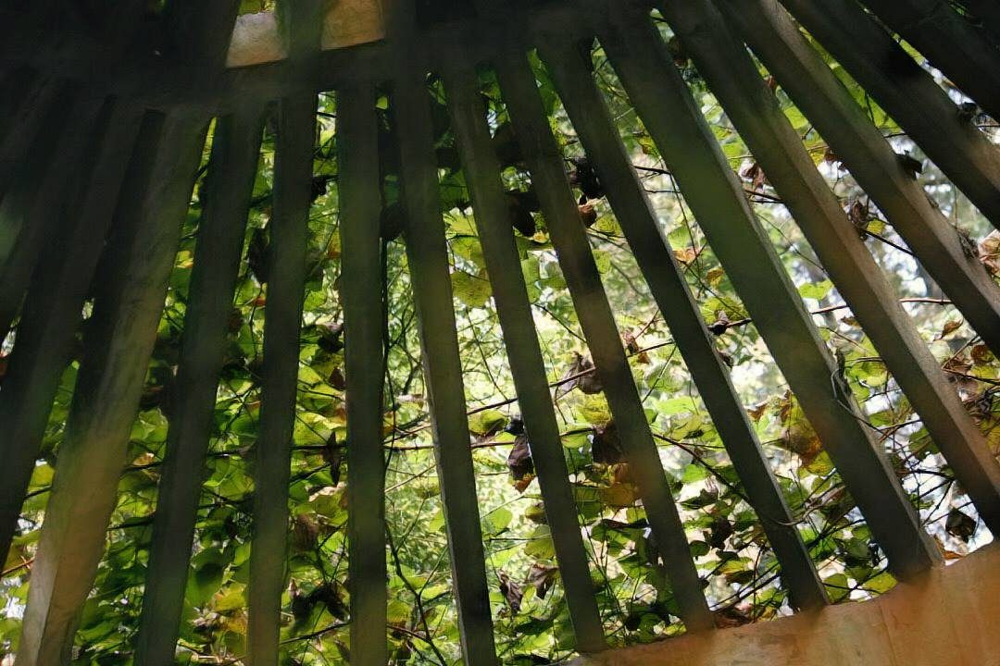

餘光
2017-10-23

「這什麼鬼地方！」
『阿sir，你有沒有覺得有誰正在看著我們？』
〈餘光〉
再見，再見
男子著一襲青杉，漫步踏入滿是芒花的丘陵，頭上的帽子用手低低地壓著，深怕那陣山風揭露了臉上的傷疤。
另一手持著竹杖，撐起滿身的歲月，一拐一拐地越過當年親手耕種卻已荒蕪的土地，山下轟隆的車聲及慢慢滾起的黃沙，催促著男子繼續向前，快步地沒入一旁破落的斑駁木屋。
你一個開門揚動整室塵埃，猶如雪花飛動，為屋內久無變化的時間帶來季節。回頭輕輕地關上了門，點起櫃上沉寂已久的煤燈，看你臉上不自覺地笑容，那陣燃燒的味道應該又令你陷入記憶，無法自拔。
光透入留有一絲縫隙的櫃中，是阿，這櫃子已腐朽到關也關不密，從你三年前走時就是如此了。門外一陣騷動，兩聲關閉車門的巨響，讓你的舊日時光被驚醒，快速地打開了櫃門，跟我說了聲，再見，連我回的再見你也沒趕得及聽，便一溜煙地離去，臨走前還不忘關上櫃子。
幸好，你總留給我一個縫，讓我還能在每個日落餘暉中，瞄見那把我常坐的椅子，得以回想你讓我坐在腿上搖晃的歡快。
門又開了，兩個大漢一臉嫌棄地走了進來
左翻右找，不會是小偷吧！
終於開櫃子了，我一個瞪眼嚇得他們倒地不起。
不用擔心，我會守在這裡，等你回來。
一日一故事，一光一懸疑。
故事柑仔店
與你相約每個日落時分。